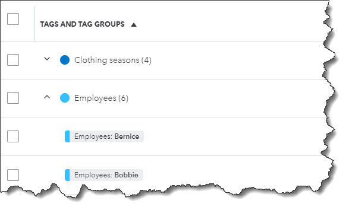
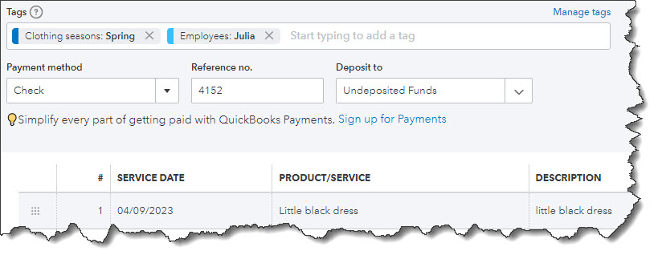

Classes and categories have their place in QuickBooks Online transactions. Tags add another way to track your financial data.
QuickBooks Online is a great tool for creating, storing, and sending sales and purchase forms, and for building detailed customer and vendor profiles. Maybe that’s all you want it to do. But to get the most out of this web-based accounting application, you should really be using its classification tools so you can view related transactions as groups and learn how specific parts of your business are doing.
Tags are the newest tool for this task. They’re customizable labels that allow you to track whatever you want, for whatever elements of your business that you want to track. You could determine how much you’re making and spending on different jobs. You could also track transactions related to, for example, ad campaigns, sales reps, and project managers. You’ll create and store tags as groups that you can view on one page. You can add them on the fly, and even run specialized reports. They’re extremely flexible tools that help you analyze your business in unique ways.
How Are They Different?
You may have encountered tags in other applications. In QuickBooks Online, they’re different from the other classification tools provided. You’ll assign categories to transactions primarily for tax purposes (how much did you spend on advertising or utilities or deductible meals?). Classes help you separate groups of income and expenses for job costing, budgeting, etc. And locations allow you to track income, expenses, and assets by geographic locations.
Tags, on the other hand, are unlimited. You can track virtually any related sets of transactions.
How Do You Create Tags?
Before you can start creating tags, you have to create a Group to assign them to. Click the gear icon in the upper right and select Tags under Lists. This will take you to the Tags home page. Click New and then Tag group. A vertical pane will slide out from the right. Choose a Group name and specify a color. Click Save. Add a tag in the Tag name field and click Add.
Once you’ve created a group, you can start adding tags.
Keep adding tags until you have all you want. You can always add more later. When you’re finished, click Done. Back at the Tags home page, you’ll see your new group listed.
How Do You Use Tags In Transactions?
Tags have no impact on your accounting books. They simply provide information to you in lists and reports.
Let’s say you run a small clothing store. You want to be able to see quickly which seasons have the most sales and which employees sell the most. You could create two groups: Clothing seasons and Employees. You want to create sales receipts to compare seasonal and by-employee sales.
Click New in the upper left corner and select Sales receipt under Customer. Select the Customer name or + Add new. Or leave it blank since it’s not required here. Check the date. Click in the Tags field to open your options there. Choose the season and the employee. You are allowed to assign as many tags as you like to a transaction, but only one for each group. Complete the rest of the receipt and save the receipt. You can add tags to any transaction that contains a field for them.
You can add tags to any transaction that contains a field for them.
If you go back to the Tags home page, you’ll see that each of the tags you just assigned contain an entry for 1 transaction in the Transaction column. Click Run report to see a Profit and Loss by Tag Group report. You’ll also find this report when you click Reports in the toolbar. In addition, you’ll find the Transaction List by Tag Group report. And you can always return to the Tags home page to see your groups, tags, and related transactions in list view.
What If You Don’t Want To Track Tags?
If you don’t plan to use tags (at least not right away), you can turn the tag field off on transactions. Click the gear icon in the upper right, then select Account and settings. Click the Sales tab in the toolbar. At the bottom of the first section here, Sales form content, you’ll see Tags. Click it, then click the on/off button until the green area disappears. Then click Save. Click the Expenses tab and turn off the line that reads Show Tags field on expense and purchase forms. Click Save.
Make Use of QuickBooks Online’s Classification Tools
Like we said earlier, QuickBooks Online works great for creating records and transactions and running reports. But you’ll understand just how powerful it is at making connections between related data by using classes, categories, locations, and now, tags. Still confused about the differences between these tools and how you would use them to get the information you need? Let’s set up a session to go over them and to answer other questions you might have about QuickBooks Online.